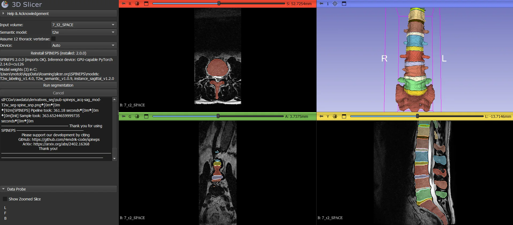
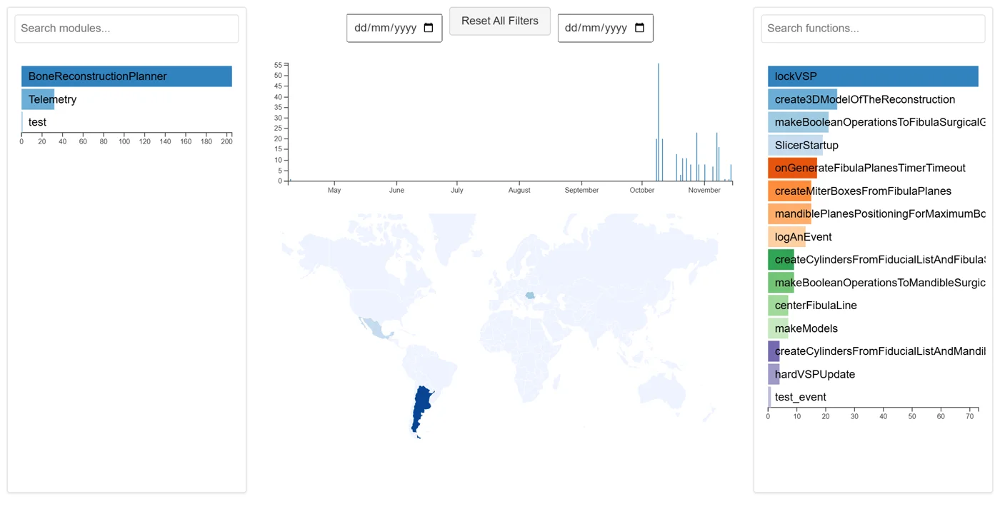

I build the software between the scanner and the surgeon: segmentation, surgical planning, image-guided navigation and intra-operative 2D/3D registration, in 3D Slicer, VTK/ITK and PyTorch. Shipped in a commercial product and in open source.
Aligning a live C-arm X-ray with the pre-operative CT, so the surgical plan can be overlaid on the patient. I lead the design and development of this workflow for a commercial surgical navigation product.
⚠ Client work under NDA — the demo below is an independent re-implementation on public data. No client code or images.6-DOF intensity-based 2D/3D registration. Left: simulated intra-op fluoroscopy with the edges of the current DRR in cyan. Middle: DRR rendered from the pre-op CT. Differentiable ray-casting in PyTorch on the GPU, NCC + gradient-NCC similarity, multi-resolution Adam.
Perspective DRR sweep — a virtual C-arm orbiting a public head CT (3D Slicer sample data).
A 3D Slicer extension I wrote and maintain: whole-spine segmentation of MRI and CT with the SPINEPS deep-learning pipeline, producing per-vertebra instance labels and anatomical subregions directly in the Slicer scene. One button installs its own PyTorch stack.
Output on a public lumbar MRI (SPIDER dataset): T11–S1 labelled automatically, discs in cyan, scrolled through the sagittal slices.

The module in 3D Slicer — settings and live log on the left, labelled vertebrae in 3D and in the three slice views.
Designed end-to-end during my research internship at the Laboratory for Percutaneous Surgery (Queen's University, Canada): which Slicer features are actually used, collected only with consent. The platform is now hosted by Kitware, and I am the top contributor to the official Slicer/SlicerTelemetry repository.

Live dashboard — module and function usage, time filter and per-country map (D3.js · DC.js · Crossfilter).
Products I shipped end-to-end — the backend, cloud and UI side that medical software also needs.
One Python / Flet codebase shipped as an Android APK and as a web app (Pyodide) on Cloudflare Pages. Supabase backend: PostgreSQL, Auth, Row-Level Security, SQL migrations, pytest.
PyQt5 / SQLite ledger with PDF statements, a Streamlit BI dashboard, ESC/POS and ESC/P check printing, and a legacy dBase migration.
OpenXR on Meta Quest: controller input, hand interaction, mixed-reality passthrough, 72 Hz tuning — the same skills as surgical simulation. See it ↗
3D Slicer (extensions, MRML) · VTK · ITK / SimpleITK · DICOM · segmentation · 2D/3D and 3D/3D registration (fiducial, ICP, intensity-based) · C-arm calibration · DRR · OpenIGTLink / PLUS · surgical navigation
PyTorch / CUDA · nnU-Net v2 · deep-learning deployment in clinical tools · differentiable rendering · NumPy / SciPy · GPU-aware installers
Python · C++ (exposure) · Qt / PySide2 · Flask · AWS · Supabase / PostgreSQL · CMake · pytest / unittest / ctest · Git · simulated devices for offline validation
Commercial 3D Slicer surgical planning and navigation product (NDA): planning, guides, real-time tracking, and the new fluoroscopy-to-CT registration workflow. Author of SlicerSPINEPS. Independent full-stack products.
Remote. Designed and built the 3D Slicer telemetry pipeline now hosted by Kitware.
English: advanced (Cambridge FCE). Spanish: native. Italian: basic.
Italian / EU citizen based in Como, Italy. No sponsorship needed in the EU, EEA or Switzerland; open to relocation to the UK, Australia and beyond.